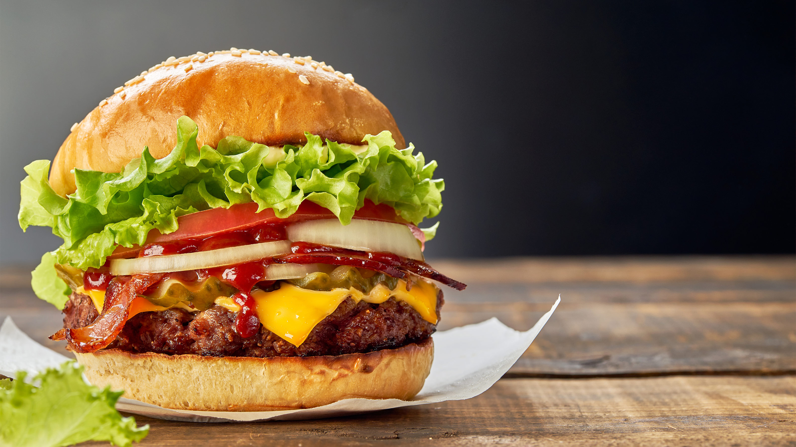

ハンバーガーの魅力

完全栄養食 ハンバーガー
ハンバーガーは、丸い小型のパン（ハンバーガーバンズ）にハンバーグステーキを挟んだ料理で、レタスやトマト、ピクルス、チーズなどの具材を
一緒に挟むこともあります。この料理はファーストフードとして普及しています。
ハンバーガーの名前は、19世紀のドイツのハンブルク地域で誕生した挽き肉を使った料理「ハンブルクステーキ」に由来しています。 ハンブルクで船乗りらに
売られていた料理 “Hamburger Rundstück” は「ハンブルクの丸いもの」という意味で、牛肉のステーキと目玉焼きを半切のパンにのせていたのが始まりです。
これがアメリカ合衆国（米国）へ伝わり、「ハンバーガー」と略称されるようになりました。
ハンバーガーを初めて考え出したのはフレッチャー・ディヴィスという人で、分厚いパンに玉ねぎのスライスを添え、ハンバーグをはさむものでした。
これを販売したところ、一気に大人気になり、1904年のセントルイス世界博覧会でお店を出しています。